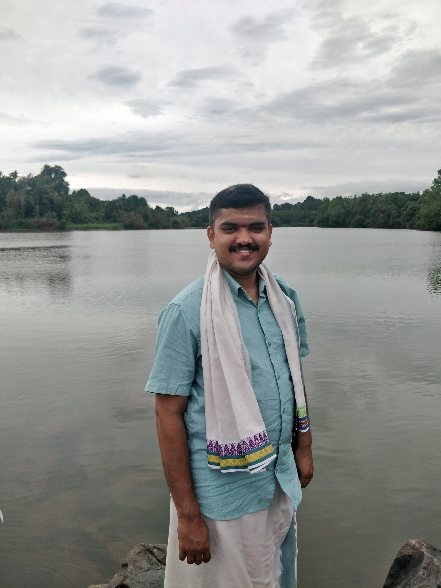

Roots in Mysuruಮೈಸೂರಿನ ಬೇರು
Kousthubh was born on 28 August 1996 in Mysuru, the cultural capital of Karnataka. His family traces its ancestry to the historic Halli Mysore. From his childhood, his parents, Sri H.N. Subbanna and Smt. H.N. Nagalakshmi, made sure he received an education that would grow his love for music, art and Indian values.
That gentle, rooted upbringing is still the first thing people notice about him: a calm and serene presence, on stage and off it.
